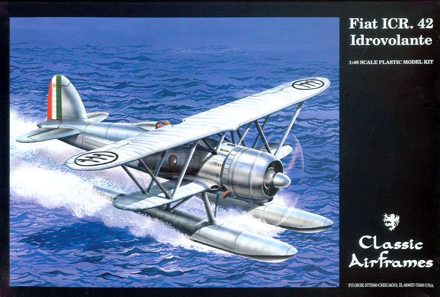
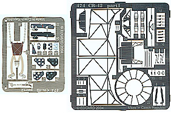
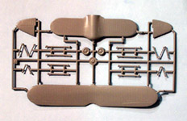
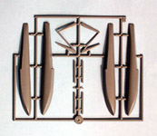
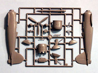
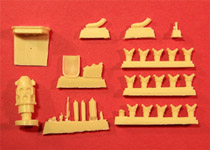
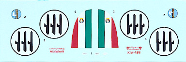

{kind=link}
{kind=link}
{kind=link}
{kind=link}
{kind=link}


Classic Airframes Fiat ICR.42 Idrovolante

Kit #498
MSRP $39.95
Images and text Copyright © 2005 by Matt Swan
Developmental Background
Designed by Celestino Rosatelli the Fiat CR.42 Falco was the last of the great biplane fighters entering flight testing in late May 1938. First flown on the 23 May 1938, it entered service with Regia Aeronautica in the spring of 1939 and served on most fronts as a fighter. The CR.42 was one of the best biplane fighters ever built, but this did not compensate for the fact that it was already obsolete before its first flight. The aircraft remained in service and in production through 1944 and saw service with the air forces of Belgium, Sweden, Hungary and even with the German Luftwaffe. All this while Germany's new jet fighter, the Me-262, was already operational!
Extremely light on the controls, universally viewed as a delight to fly, superbly agile and innately robust, the CR.42 represented a decade-and-a-half of continuous fighter development; it was a thoroughbred with a distinguished pedigree carrying fighter biplane evolution to its apex. The CR.42 would see combat throughout WWII and would fight against the Luftwaffe, alongside the Luftwaffe and with the Luftwaffe itself. The aircraft was used as a fighter, an escort aircraft, a night fighter and a trainer. It was used in a ground support role and as a convoy-escort. Last but not least, a few CR.42s were employed also in anti-shipping role with their two 100Kg bombs, dropping them after a dive and some successes were obtained.
Idrovolante translates as “boat” or “flying boat” depending on context. One CR 42 with floats left the production line of Costruzioni Meccaniche Aeronautiche S.A., a Fiat affiliate, to become perhaps the world’s fastest biplane floatplane. It flew for the first time in early 1941 and was designated the ICR.42. By time production ceased in 1944 a total of 1,782 CR.42s were built in six different variants and had seen action on many fronts including North Africa, the Mediterranean, the Battle of Britain and East Africa. About forty CR.42s survived to the end of the war and almost twenty of them were used in the late 1940s by the Italian Air Force as trainers and liaison planes. Thus ended the career of the Falco, in a sense a monument to a great plane and the last of its era.
The Kit

Classic Airframes did us right today! I had been expecting this kit for some time with a certain level of excitement and could hardly contain myself when it first arrived and I could actually open the box and fondle the plastic. Initially it does not look like there is that much to this kit with three medium sized sprues of medium gray parts packaged in a poly bag along with a small bag of resin goodies and a Photo Etch package. Unlike many kits of this scale the wings are cast as single pieces rather than tops and bottoms. The fabric texture is well represented and all control surfaces and panel lines are recessed. The cowling and gun cover have a variety of raised details as well. This kit is basically the CR.42 with the addition of a float sprue. The parts for the standard landing gear and pants are included also. There are some fairly heavy injector pins inside the fuselage halves but they are located in areas that do nor present a problem. The other parts do not display any sink marks, flash or noticeable mold separation lines.
The Photo Etch package actually includes two frets, one small fret of pre-colored parts for the instrument panels and seatbelts and a larger fret with cockpit interior details and engine details. The kit contains a single clear part for the windscreen. This piece displays good clarity and well defined frame lines. The resin package covers the engine and additional cockpit details. The engine is a neat little assembly with separate cylinder heads and carburetors. Test fitting of plastic and resin parts indicates a good fit and little need for filler. The inventory consists of thirty resin pieces, fifty photo etched pieces, one clear piece and forty-nine medium gray plastic pieces for a total of 130 pieces in the box. Of course some of these will not be used for this version of the aircraft.




You may click on the small images above to view larger pictures
Decals and Instructions
The instruction packet with this kit is somewhat unusual. It opens with an A-5 sized pamphlet for the basic CR.42 model. This begins with a nice little background on the aircraft, a complete parts map and thirteen exploded view construction steps.

Next comes another folded sheet as an addendum for the floatplane conversion. This includes another parts map and a repeat of many of the same steps seen in the first packet. Basically step #13 from the first packet is replaced by two new steps for the addition of the floats. We also get a single half page with decal placement instructions for one aircraft. There is still one more sheet to mention, a small black and white print showing the cockpit pieces assembled.
It seems there was only one aircraft manufactured in this configuration so it just makes sense that we have decals for one aircraft. The decals are for basic markings with no unit markings (which is appropriate), no service stencils or warning stencils. The decals show good print registry, good color density and appear very sharp. Previous experience with CA decals indicates that these should behave nicely with most decal setting solutions.
Conclusions
I feel this is a pretty sharp kit. The parts are all well cast, they fit together well, there are plenty of little detail parts for both the cockpit interior and the engine. As nice as this kit is it does have one major shortfall. If you look at the box art you’ll see a large faired air intake at the base of the lower wing. This looks to be a fairly prominent detail however it was completely missed on the model. The modeler can either build the model without this feature or attempt to scratch build the inlet onto the wing. Decals are basic but that is what the actual aircraft carried. Instructions are good and cover all the important aspects of the build. The kit is real new on the market so there is not much in the line of aftermarket out there. Italian Classic Model Kits does have a large super detail kit available for this model but the cost of that package far exceeds the cost of the kit itself. Pavla Resins makes a nice little package of replacement flight control surfaces if you want to cut the original pieces out and have them repositioned. Classic Airframes has issued this in a couple of configurations; the AS, the night fighter and the float plane. Italeri also has their version released just a few months ago and Pacific Coast Models has two versions of the Falco out under their nametag. It looks like a good year for the CR.42 and any of these would make a good addition to your collection.